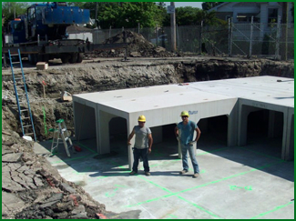
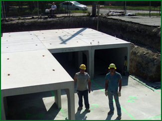
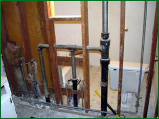
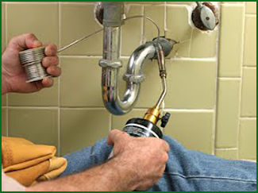

24-Hour Emergency Service
Leaky toilets, water heaters that don’t work, clogged pipes, sewer problems, low water pressure — our repair team is available around the clock for a full assessment of any concern.
↗Chicago & Cook County · Licensed IL Plumbing Contractor No. 055-042543
A family-run Chicago plumbing company with more than 25 years in the trade — from a leaking faucet to a City of Chicago water main. 24-hour emergency service, 365 days a year.
See our work
Municipal-grade work, on every job.
Our company
Garces Contractors LLC is comprised of professional individuals with a collective 27 years of experience. General Manager Elda Garces Mannion has been working in construction for decades before starting her own contracting and plumbing services company.
Our list of clientele is just as diverse as the work we do — large water main jobs from the City of Chicago and public institutions, contract work for firms like Reliable Contracting, Ujamma Corp., Walsh Construction, and O’Neil, and service calls from residents around the neighborhood. We invite you to look over our credentials, and if you have questions about how we can help, give us a call anytime.
What we do
Garces Contractors handles all residential and commercial plumbing throughout Chicagoland, 365 days a year, in addition to sewer and water main work for large municipalities and major cities.
Leaky toilets, water heaters that don’t work, clogged pipes, sewer problems, low water pressure — our repair team is available around the clock for a full assessment of any concern.
↗High-pressure jetting clears stubborn blockages fast, backed by a warranty when combined with a video camera inspection so you get a copy of the footage and a real diagnosis.
↗Whole-house repiping for aging galvanized lines, done with as little disturbance to the home as possible — we coordinate with the drywall and paint crews so you’ll never know we were there.
↗Installation and repair of standard, tankless, and solar water heaters, plus frozen pipe repair and thawing when Chicago winters take their toll.
↗Installation, maintenance, and upgrades on sump pumps, ejector pumps, overhead sewers, and pressure boosters to protect your home or business from flood damage.
↗Backflow installation and certification, ADA-compliant upgrades, and correction of code violations — we know the local plumbing codes and can give you an unbiased read on where a building stands.
↗Permitting, ordering and coordinating materials, site utilities, and full exterior plumbing scopes for City of Chicago conduit and water main projects and public institutions.
↗Selected work
Real jobsites from our crews — municipal conduit and water main work alongside residential repiping.

Municipal · Chicagoland
Garces Contractors performs sewer and water main work for large municipalities and major cities in the Chicago area — permits, materials, scheduling, and the full exterior plumbing scope, start to finish.
Municipal · Chicagoland
Large-diameter concrete pipe sections staged and set on a municipal sewer job — the kind of scale that comes from decades of city permitting and utility work.

Residential · Chicago
Some galvanized piping causes ongoing maintenance problems and can lower a home’s resale value. We handle whole-house repiping and have become experts at doing it with as little disturbance as possible.

Residential · Chicago
Sinks, toilets, faucets, disposals — the day-to-day repair calls that make up most of a Chicago plumber’s week, handled by trained technicians who protect the work area and clean up before leaving.
The jetting advantage
For the latest in drain cleaning for a Chicagoland home or business, our jetting system uses high-powered pressure to clear out the most stubborn debris in your pipes and drains — 24/7.
In their words
“Garces Contractors was always on schedule with their work and I found them to be professional and the quality top notch. Their proactive approach to the difficulties of working in the City of Chicago was second to none. I would strongly recommend using Garces Contractors.”
“We have worked with the owner for more than a decade and can honestly and sincerely say that she always delivered on her promises. Whenever we require a City of Chicago water permit, Elda Mannion is the only person we would contact.”
“This was not a simple job — tapping into the existing water main under the street, tunneling under sidewalks and into our 1886 house. Permits were granted within a week, and the job was finished two weeks after the first ground was broken, during the coldest time of the year.”
“We have been doing business with Garces Contractors for more than 15 years. All work was completed in a prompt and highly professional manner. Mrs. Mannion has been very helpful in providing information and advice on all projects.”
“CMM Group, Inc. contracted with Garces Contractors to perform the plumbing scope of work for the Harold Washington School. Garces was an asset to the project — reliable and professional from submittal through execution.”
“We can’t thank you enough for the professional folks who took care of all our sump pump needs. You have a very generous heart, and because of you we are sleeping and enjoying our home.”
Start a conversation
Tell us what’s going on — a leak, a remodel, or a municipal bid — and we’ll follow up. Emergencies get a call back day or night.
(773) 626-6468